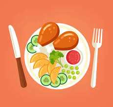

Nutrition Tips
Fuel your body properly to maximize your fitness results.
Understanding Macronutrients
Protein
Essential for muscle repair and growth.
- Sources: Chicken, fish, eggs, tofu, legumes, Greek yogurt
- Recommended: 1.6-2.2g per kg of bodyweight for active individuals
- Timing: Distribute throughout the day, with a serving post-workout
Carbohydrates
Primary energy source for high-intensity exercise.
- Sources: Rice, oats, potatoes, fruits, whole grains
- Recommended: 3-5g per kg of bodyweight for active individuals
- Timing: Higher amounts before and after workouts
Fats
Important for hormone production and vitamin absorption.
- Sources: Avocados, nuts, olive oil, fatty fish
- Recommended: 0.5-1g per kg of bodyweight
- Timing: Moderate amounts throughout the day, less around workouts
Recommended Macro Ratio
Note: Optimal ratios may vary based on individual goals and activity levels.
Sample Meal Plan
Breakfast
- 3 whole eggs + 3 egg whites scrambled
- 1 cup oatmeal with berries and honey
- 1 banana
Macros: 40g protein, 60g carbs, 20g fat
Mid-Morning Snack
- Greek yogurt (1 cup)
- 1 scoop protein powder
- 1/4 cup granola
- 1 tbsp honey
Macros: 35g protein, 30g carbs, 8g fat
Lunch
- 6oz grilled chicken breast
- 1 cup brown rice
- 1 cup mixed vegetables
- 1 tbsp olive oil
Macros: 45g protein, 50g carbs, 15g fat
Pre-Workout
- 1 banana
- 1 scoop protein powder
- 1 slice whole grain toast with 1 tbsp peanut butter
Macros: 25g protein, 40g carbs, 10g fat
Post-Workout
- 2 scoops protein powder
- 1 cup almond milk
- 1 cup berries
- 1 tbsp honey
Macros: 50g protein, 30g carbs, 5g fat
Dinner
- 8oz salmon
- 1 medium sweet potato
- 2 cups mixed vegetables
- 1 tbsp olive oil
Macros: 45g protein, 40g carbs, 25g fat
Daily Totals
Calories: ~3,000
Protein: 240g (32%)
Carbs: 250g (33%)
Fat: 83g (25%)
Fat loss meal plan details will be displayed here.
Maintenance meal plan details will be displayed here.
Hydration Tips
Daily Water Intake
Aim for 3-4 liters (100-135 oz) of water per day for active individuals.
Hydration Schedule
- Morning: 500ml (16oz) upon waking
- Pre-workout: 500ml (16oz) 2 hours before exercise
- During workout: 250ml (8oz) every 20 minutes
- Post-workout: 500ml (16oz) to rehydrate
- Throughout day: Regular sips between meals
Signs of Dehydration
- Thirst
- Dark yellow urine
- Fatigue
- Headache
- Decreased performance
Supplements
Note: Supplements should complement a balanced diet, not replace it. Consult with a healthcare professional before starting any supplement regimen.
Protein Powder
Benefits: Convenient source of protein for muscle recovery and growth.
Recommended use: 1-2 scoops post-workout or between meals.
Creatine Monohydrate
Benefits: Increases strength, power, and muscle mass.
Recommended use: 3-5g daily, timing not critical.
Fish Oil
Benefits: Supports joint health and reduces inflammation.
Recommended use: 1-3g of combined EPA/DHA daily with meals.
Vitamin D
Benefits: Supports bone health, immune function, and hormone production.
Recommended use: 1000-5000 IU daily, especially during winter months.